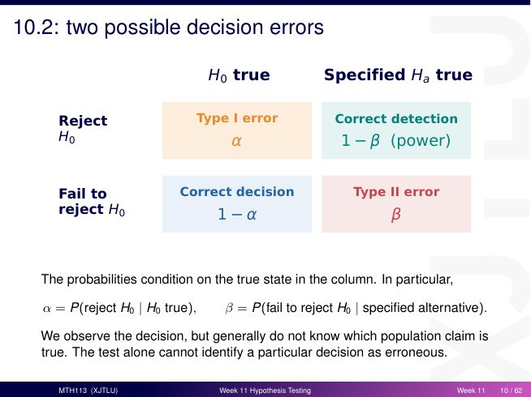
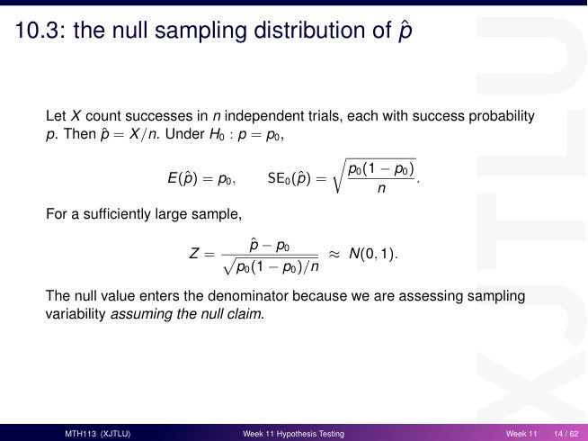
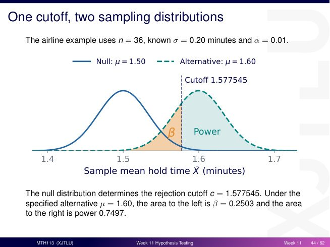
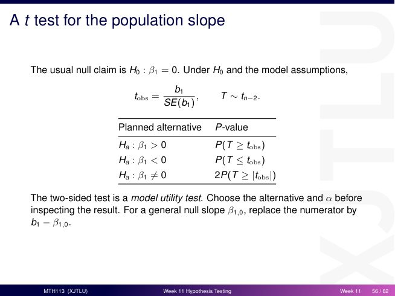

MTH113 · 第 11 章
假设检验与回归斜率
Hypothesis Testing & Regression Slopes
虚线下划线为术语；悬停查看中文、英文与释义，完整词典见“术语”。
本章目录
本讲把前三周的抽样分布与置信区间接到“决策”上：先把研究问题写成 H0 与 Ha，用样本判断证据是否足够强，再把同一套 t 检验逻辑延伸到回归斜率 β1。
本章要点
- 假设针对总体参数（μ、p），不针对样本统计量；写成 H0: μ = 100，不能写 H0: x̄ = 100。
- H0 一律用等号；单尾检验在边界值处计算，隐含的零假设包含“更极端”的一侧。
- α = P(拒绝 H0 | H0 真)，β = P(不拒绝 H0 | 指定备择为真)；α 定得越小，β 一般越大。
- 比例检验的零标准误用 p0 计算；条件为随机样本、np0 ≥ 10、n(1−p0) ≥ 10、10% 条件。
- P 值是在 H0 与模型成立时，统计量至少与观测值一样不利于 H0 的概率；P ≤ α 则拒绝。
- σ 已知用 z，σ 未知用 t（df = n−1）；大样本不会把 s 变成已知的总体值。
- power = 1 − β，随真实值远离 H0、α 增大、n 增大而升高，随总体变异增大而降低。
- 斜率检验 H0: β1 = 0，t = b1/SE(b1)，df = n−2；置信区间不含 0 与双尾检验的拒绝结论一致。
11.1 假设是关于总体的陈述
推断的对象是总体参数：均值 μ、比例 p。样本只提供 x̄ 与 p̂ = X/n 作为证据。所以假设必须写成 H0: μ = 100，而不是 H0: x̄ = 100。检验的任务，是在承认抽样变异的前提下，评估两个互相竞争的总体陈述。
| 研究问题 | H0 | Ha |
|---|---|---|
| 均值是否改变？ | μ = μ0 | μ ≠ μ0 |
| 均值是否增大？ | μ = μ0 | μ > μ0 |
| 均值是否减小？ | μ = μ0 | μ < μ0 |
零假设null hypothesis H0 给出初始参照陈述，证据针对它评估；备择假设alternative hypothesis Ha 是研究设计要检出的偏离。两者必须针对同一特征与同一参照值。
方向必须在看数据之前确定。问题问“是否有任何改变”，用双尾；问“是否改善”或“是否降低”，用单尾——但“改善”指哪个方向，要先在情境中定义清楚。
等号约定：H0 一律用等号写。对 Ha: μ < μ0，隐含的零假设其实包含 μ ≥ μ0，检验在边界 μ = μ0 处计算。观测估计若落在相反方向，不能因此改写备择假设。
两个结论刻意不对称。拒绝 H0：样本提供了足够有说服力的证据反对零假设、支持所述备择（在假定成立的前提下）。不拒绝 H0：样本没有提供足够有说服力的证据；这不等于证明 H0 为真。小样本或噪声大的样本可能漏掉重要偏离，要把“没有强证据”与“证据表明相等”分开。
三类研究问题的写法可以对照：灌装线检查平均装量是否偏离 500 mL → H0: μ = 500，Ha: μ ≠ 500，双尾；新界面希望把平均完成时间降到 8 分钟以下 → Ha: μ < 8，下尾；大学问是否超过 60% 学生偏好电子笔记 → Ha: p > 0.60，上尾。
讲义还点出一对错误写法：H0: p̂ = 0.60 与 Ha: p > 0.70。两处毛病——p̂ 描述样本而非总体；零假设与备择必须使用同一参照值。
W11 p.4–9
11.2 两类错误与显著性水平
决策只有两种，真实状态也只有两种，于是构成 2×2 表：
| 决策 | H0 为真 | 指定的 Ha 为真 |
|---|---|---|
| 拒绝 H0 | Type I 错误Type I error，概率 α | 正确检出，概率 1−β（power） |
| 不拒绝 H0 | 正确决策，概率 1−α | Type II 错误Type II error，概率 β |
四个概率都以“真实状态”为条件：
我们观测到的是决策，一般并不知道哪个总体陈述为真；单次检验本身无法指出某个决策是错误。
讲义的情境例：供应商声称 2% 元件有缺陷，检验 H0: p = 0.02 对 Ha: p > 0.02，超标则退货。Type I 错误是边界零假设为真却判为超标，合格批次被退回；Type II 错误是真实次品率高于 0.02 却没检出，劣质批次继续使用。供应商承担不必要退货的成本，客户承担漏检的后果——可接受的错误风险应随情境而定。
显著性水平significance level α 是事前选择的错误风险：要在考虑错误后果之后、查看数据之前确定。讲义的上尾正态图在 α = 0.05 时临界值为 1.645；在边界零假设下，重复抽样中约 5% 会拒绝。大样本检验只是近似达到这个比例。
α 与 β 互相牵制：α 更小意味着要求更强的证据，在其他条件固定时，指定备择处的 β 一般会增大，power 相应下降。

W11 p.10–13
11.3 比例的 z 检验：零分布与条件
设 X 为 n 次独立试验中的成功数，每次成功概率为 p，样本比例 p̂ = X/n。在 H0: p = p0 下，
样本足够大时，
分母用 p0 而不是 p̂：我们是在“零假设为真”的前提下评估抽样变异，标准误必须用假设值计算。这与第 9 周构造置信区间时用 p̂ 估计标准误正好相反。
大样本比例检验有三个条件：
- p̂ 来自随机样本，或设计上可视为有代表性且观测独立；
- 两个零期望计数都足够大：np0 ≥ 10 且 n(1−p0) ≥ 10；
- 不放回抽样时，样本不超过总体的 10%。
讲义例：2006 年调查 1003 名随机抽取的美国成年人，582 人报告经常查看营养标签。p̂ = 582/1003 = 0.580259。设 p 为该调查目标总体中经常查看者的比例，H0: p = 0.50，Ha: p > 0.50。零期望计数为 1003(0.5) = 501.5，两类都满足。
观测比例在 0.50 之上约 5.08 个零标准误。若先把 p̂ 舍入成 0.58、标准误舍入成 0.016，会得到 z = 5.00——结论不变，但过程中应保留原始计数与样本量。

W11 p.14–17
11.4 P 值、判定规则与尾数
定义：在 H0 与统计模型成立的条件下，P 值P-value是检验统计量至少与观测值一样不利于 H0 的概率，方向由 Ha 决定。
营养标签例中备择为上尾，故 P = P(Z ≥ 5.08365) ≈ 1.85 × 10−7。它极小，但不是字面上的 0。P 值也叫观测显著性水平（observed significance level），与检验前选定的 α 不是同一个东西。
判定规则：
取 α = 0.05，上例拒绝，结论是：有说服力的证据表明目标总体中超过一半的人经常查看营养标签。
解释必须带条件：P 值不是“H0 为真的概率”，它描述的是“若零模型成立，出现这样或更极端统计量的概率”。
| 备择假设 | P 值 |
|---|---|
| p > p0 | 1 − Φ(z) |
| p < p0 | Φ(z) |
| p ≠ p0 | 2{1 − Φ(|z|)} |
双尾要把两侧同样极端的面积都算上。以 z = 2 为例：上尾 P ≈ 0.0228；下尾 z = −2 同样是 0.0228；双尾为 0.0455。
一个容易忽略的细节：若方向性统计量指向备择假设的反方向，其 P 值可以大于 0.5。
W11 p.18–21
11.5 九步流程与两个比例实例
讲义把一次完整检验拆成九步。前四步属于“理解情境、制定计划”：
- 用情境语言定义总体特征；
- 写出零假设 H0；
- 写出备择假设 Ha；
- 选定显著性水平 α。
这四步要在用样本做判定之前完成：它们确定问题、证据方向与可容忍的 I 类错误风险。后五步是“执行与结论”：
- 写出所用统计量，并代入零假设值；
- 检查该程序所需的假定；
- 计算样本量与统计量；
- 求对应的 P 值；
- 给出决策，并用情境语言回答研究问题，包含所用显著性水平。
实例一（下尾）：某县开展节水活动后，随机抽取 500 户，其中 220 户用水减少，p̂ = 0.440。设 p 为全县用水减少户的比例，H0: p = 0.50，Ha: p < 0.50，取 α = 0.01。零期望计数为 250 与 250；假定 500 户不超过全县户数的 10%。
0.003645 < 0.01，拒绝 H0：有证据表明全县不到一半的家庭减少了用水。把 z 舍入到 −2.68 查表得 P ≈ 0.0037，决策不变。
实例二（双尾）：某大学 250 名学生的随机样本中 145 人偏好格式 A。检验 H0: p = 0.50 对 Ha: p ≠ 0.50，α = 0.05。p̂ = 145/250 = 0.58，np0 = n(1−p0) = 125。
在 α = 0.05 下拒绝 H0：有证据表明偏好 A 的总体比例不等于 0.50，样本估计偏高。估计差异为 0.08，即 8 个百分点。注意标准误里用 p0 = 0.50，而不是 p̂ = 0.58。
W11 p.22–27
11.6 均值的 z 检验与 t 检验
对 H0: μ = μ0，统计量取决于 σ 是否已知：
| 信息 | 统计量 | 零参照分布 |
|---|---|---|
| σ 已知 | z = (x̄ − μ0)/(σ/√n) | N(0, 1) |
| σ 未知 | t = (x̄ − μ0)/(s/√n) | tn−1 |
t 的情形更重要，因为总体 σ 几乎不会已知。大样本不会把样本标准差 s 变成已知的总体值——这句话是本章的常考点。
条件：随机或有代表性、观测独立的样本；正态总体才能保证精确的正态/t 参照；小样本要先看图形是否存在明显偏态与离群点；n ≥ 30 只是常用的大样本经验值，严重偏态、重尾、偏倚或相依仍需处理。直方图能帮助判断形状，但不能证明抽样随机或观测独立。
例（σ 已知）：某过程总体标准差 σ = 9 分钟，36 次独立运行的随机样本给出 x̄ = 96.8 分钟，假定正态模型合理。H0: μ = 100，Ha: μ < 100，α = 0.05。
下尾概率 P = 0.01645，拒绝 H0：数据提供证据表明总体均值低于 100 分钟。
为什么估计 σ 会导致 t：统计量 T = (X̄ − μ0)/(S/√n) 中，X̄ 与 S 都随样本变化，估计分母额外引入了不确定性。因此 t 分布t distribution尾部比标准正态更厚，自由度越小越明显；df 增大时曲线趋近正态。独立正态观测下，零分布精确为 tn−1。
上尾 t 表列出的是统计量右侧的概率；负统计量用对称性处理，双尾把尾面积乘 2。
例（σ 未知，小样本）：10 名员工的每日非工作任务时间（分钟）为 108, 112, 117, 130, 111, 131, 113, 113, 105, 128。问本公司均值是否低于 120 分钟的基准。H0: μ = 120，Ha: μ < 120，α = 0.05。n = 10，x̄ = 116.8，s = 9.44928。
0.15604 > 0.05，不拒绝 H0：数据不足以证明该公司总体均值低于 120 分钟。估计差异是 −3.2 分钟。“没有足够证据表明下降”不等于“证明等于基准”。
小样本检查：这 10 个观测有些不对称，但没有孤立的极端值；继续计算需要接受“总体近似正态”的假定，而 10 个观测无法证明正态。独立性与代表性仍是设计假定。
查表与软件：把 t 舍入到 −1.1 得下尾 P ≈ 0.150；用完整数据得 0.15604。两者在 α = 0.05 下决策相同。计算保留全精度，只在报告时舍入；软件显示 0.000 只是舍入约定，应报告一个上界或科学计数，而不是写 P = 0。
W11 p.28–36
11.7 统计显著性与实际显著性；power 与样本量
例（双尾 t，边界结果）：16 个元件的独立随机样本给出 x̄ = 3.42 mm，s = 0.80 mm，假定总体近似正态且无严重离群点。检验 H0: μ = 3.00 对 Ha: μ ≠ 3.00，α = 0.05。
不拒绝 H0：5% 水平下证据不足。刚刚越过阈值的结果不能证明相等。
与置信区间的连接：用 t0.975,15 = 2.13145，匹配的 95% 区间为
区间包含 3.00，与双尾 t 检验的结论一致。这正是第 9 周均值推断的回归。
例（大样本、实际意义小）：某地区考试成绩样本 n = 2500，x̄ = 101.0，s = 15.0。检验 H0: μ = 100 对 Ha: μ > 100，α = 0.001。
上尾 P ≈ 0.000435，拒绝 H0。但估计的增幅只有 1 分：统计显著并不说明这 1 分在教育上有意义，需要实际基准来判断。
power 的定义：对指定的真实值 θ，Power(θ) = Pθ(拒绝 H0)。当该值属于备择时，Power(θ) = 1 − β(θ)。它回答的是：一个固定的检验程序，检测到指定偏离的频率有多高。
真实参数未知，所以只能对若干“如果”值计算。报告 power 时必须同时说明备择值、样本量、显著性水平与变异性假定。
什么改变 power（其他相关条件固定）：真实值沿 Ha 方向偏离越大，power 越大；α 越大，power 越大，但 I 类错误也增大；n 越大，标准误越小，power 越大且不提高 α；总体变异越大，固定均值差下的 power 越小。
例（航空客服等待时间）：公司声称平均等待 1.5 分钟，用 36 通独立电话检验 H0: μ = 1.5 对 Ha: μ > 1.5，假定 σ = 0.20 分钟已知，α = 0.01。
若真实均值为 1.60，则 X̄ ~ N(1.60, 0.03333332)：
同一拒绝域在真实均值 1.65 时 power 为 0.985134；若 n 从 36 增到 64（讲义图示），power 从 0.750 升到 0.953。
若把 σ 改为从同一样本估计，以上计算不再精确：估计变异性要走 t 程序，power 需要对应方法与假定的总体变异。

W11 p.37–46
11.8 报告与解释陷阱
清晰报告有四个成分：
- 假设：用情境语言指出总体特征与两个竞争陈述；
- 程序：点名所用检验，并说明其假定为何合理；
- 数值证据：报告统计量、适用时的自由度与 P 值；
- 结论：回答原问题，并写明所用显著性水平。
报告 P 值的作用是让读者自行判断：换一个显著性水平，决策会不会改变。读软件输出要当论证看，而不是当判决：确认检验的是哪个参数与参照值；确认是上尾、下尾还是双尾；确认程序（正态近似与精确二项计算不必给出相同的 P 值）；检查假定与数据所能支持的总体；最后把统计量与概率翻译回原问题的结论。
讲义给出一段反面示例：“样本给出 P = 0.053，所以总体均值正好是 3 mm，检验证明生产正确。”改进版是：16 个元件的独立随机样本，平均厚度 3.42 mm、样本标准差 0.80 mm；假定总体近似正态，对 H0: μ = 3.00 对 Ha: μ ≠ 3.00 做双尾单样本 t 检验，得 t(15) = 2.10，P = 0.0531；在计划的 5% 水平下，数据不足以证明总体均值不同于 3.00 mm；结果既不能证明精确相等，也不能证明所有生产要求都满足；估计值与匹配区间 (2.994, 3.846) mm 应与有意义的制造公差比较。
四条解释警告：
- 不拒绝不确立 H0——要问样本是否有能力检出有意义的偏离；
- 普查会改变问题——若目标总体的特征已知，描述该总体不需要抽样推断；
- 统计显著与实际显著不同——要评估效应大小及其后果；
- 推广到观测总体之外或未来结果，是另一个推断问题；小 P 值本身也不建立因果解释。
| 情形 | 公式 |
|---|---|
| 比例 | z = (p̂ − p0)/√[p0(1−p0)/n]，Z ≈ N(0,1) |
| 均值，σ 已知 | z = (x̄ − μ0)/(σ/√n)，Z ~ N(0,1) |
| 均值，σ 未知 | t = (x̄ − μ0)/(s/√n)，T ~ tn−1 |
| 判定 | P ≤ α 拒绝；P > α 不拒绝 |
| power | 指定备择处 Power = 1 − β |
W11 p.47–52
11.9 回归斜率 β1 的检验与置信区间
有定量解释变量时，总体模型为
样本直线 ŷi = b0 + b1xi 估计总体直线。β1 是 x 每增加一个单位，Y 的总体平均改变量；b1 随样本变化，斜率检验正是为这种抽样变异留出余地。注意 β1（总体斜率）与 β（II 类错误概率）是两个不同的符号。
斜率推断的四个假定（在给定观测 x 的条件下）：
- 线性均值：E(Y | x) = β0 + β1x，即每个 x 处误差均值为 0；
- 方差恒定：误差标准差 σ 在每个 x 处相同；
- 正态误差：每个固定 x 处误差分布为正态；
- 独立误差：不同观测的误差相互独立。
用研究设计与残差诊断评估这些条件。解释变量 x 本身不必服从正态。
斜率的不确定性由两个量刻画：
se 衡量残差散布，SE(b1) 衡量斜率不确定性。拟合截距与斜率用掉两个自由度，故剩 n−2。其他条件固定时，残差越小或 x 分布越宽，斜率越精确。
检验的零假设通常是 H0: β1 = 0：
| 备择假设 | P 值 |
|---|---|
| Ha: β1 > 0 | P(T ≥ tobs) |
| Ha: β1 < 0 | P(T ≤ tobs) |
| Ha: β1 ≠ 0 | 2P(T ≥ |tobs|) |
双尾检验也叫模型效用检验model utility test：它问的是“这条直线是否比水平线解释得更多”。备择与 α 必须在看结果前确定；若零假设是某个非零值 β1,0，把分子换成 b1 − β1,0。
例：12 名学生的随机样本记录每周练习小时 x 与任务得分 y，拟合线 ŷ = 42 + 1.8x，Sxx = 50 h2，SSE = 100 分2。假定模型条件合理，计划 α = 0.05 的双尾检验，H0: β1 = 0，Ha: β1 ≠ 0。
P < 0.05，拒绝 H0：数据提供证据表明练习小时与任务得分之间存在正的总体线性关联。估计的平均得分差是每多一小时练习 1.8 分。
这是观察性关联，不建立因果；统计显著也不保证对个别学生的预测准确。
同一组假定下，总体斜率的 100(1−α)% 置信区间为
解释：我们有 95% 的信心认为，每多一周小时练习，总体平均得分差在 0.80 到 2.80 分之间。区间不含 0，与匹配的双尾 5% 检验一致。实际重要性要结合效应大小、区间与课程情境判断。

W11 p.53–59